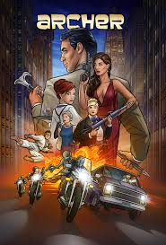
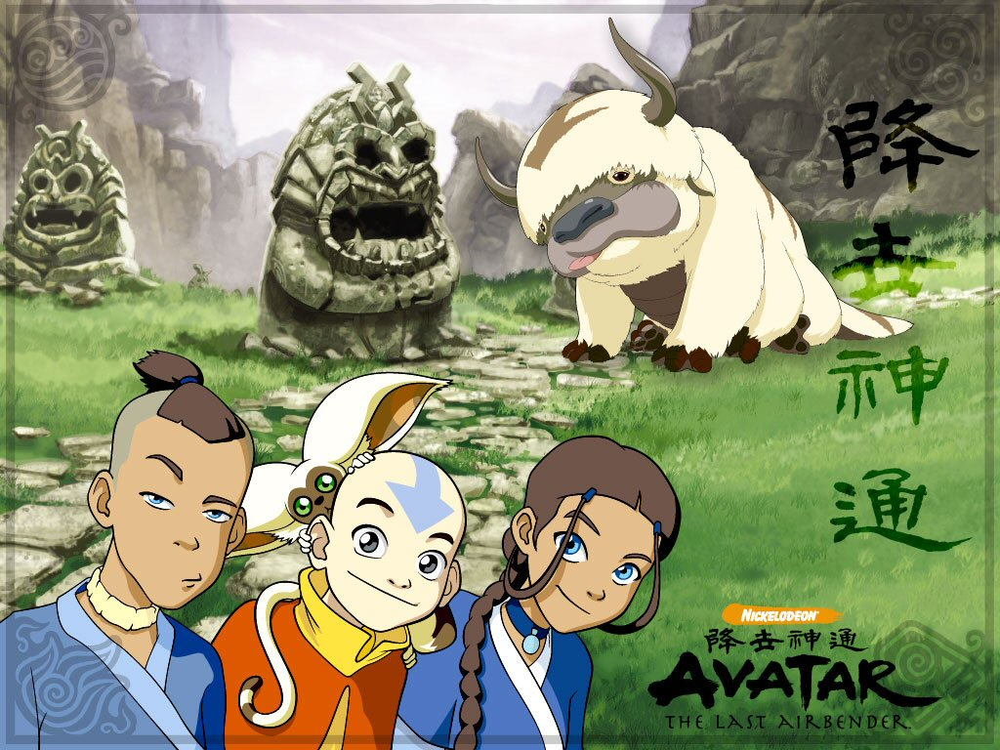

5: Star Wars: The Clone Wars

Ratings : 🌟 8.3
Genre :ActionAdventureAnimation
Seasons : 7
Episodes : 133
Air-Date : October 3, 2008
Watch-Time : 23 min.(Per Ep.)
Synopsis:
Chronicling the events that took place between Star Wars: Episode II - Attack of the Clones (2002) and Star Wars: Episode III - Revenge of the Sith (2005), this show follows the wartime days of Anakin Skywalker (Matt Lanter), Obi-wan Kenobi (James Arnold Taylor), and Yoda (Tom Kane). This show also brings new characters to the forefront of Star Wars canon, including Anakin's apprentice Ahsoka Tano (Ashley Eckstein), and Captain Rex (Dee Bradley Baker).
4: Archer
Ratings : 🌟 8.6
Genre : ActionAnimationComedy
Seasons : 11
Episodes : 119
Air-Date : September 17, 2009
Watch-Time : 22 min.(Per Ep.)
Synopsis:
At an international spy agency, global crises are merely opportunities for its highly trained employees to confuse, undermine, betray and royally screw each other. At the center of it all is suave master spy Sterling Archer, whose less-than-masculine code name is "Duchess." Archer works with his domineering mother Malory, who also is his boss. He also has to deal with his ex-girlfriend, Agent Lana Kane and her new boyfriend, comptroller Cyril Figgis, as well as Malory's lovesick secretary, Cheryl.
3: Attack On Titan

Ratings : 🌟 8.4
Genre : ActionMilitaryMysterySuper PowerDramaFantasy
Seasons : 4
Episodes : 25(Per Season)
Air-Date : 7-April-2013
Watch-Time : 24 min.(Per Ep.)
Synopsis:
Centuries ago, mankind was slaughtered to near extinction by monstrous humanoid creatures called titans, forcing humans to hide in fear behind enormous concentric walls. What makes these giants truly terrifying is that their taste for human flesh is not born out of hunger but what appears to be out of pleasure. To ensure their survival, the remnants of humanity began living within defensive barriers, resulting in one hundred years without a single titan encounter. However, that fragile calm is soon shattered when a colossal titan manages to breach the supposedly impregnable outer wall, reigniting the fight for survival against the man-eating abominations.
After witnessing a horrific personal loss at the hands of the invading creatures, Eren Yeager dedicates his life to their eradication by enlisting into the Survey Corps, an elite military unit that combats the merciless humanoids outside the protection of the walls. Based on Hajime Isayama's award-winning manga, Shingeki no Kyojin follows Eren, along with his adopted sister Mikasa Ackerman and his childhood friend Armin Arlert, as they join the brutal war against the titans and race to discover a way of defeating them before the last walls are breached.
1: One Piece

Ratings : 🌟 8.3
Genre : ActionAdventureComedySuper PowerFantasyShounen
Seasons : 1
Episodes : 957(Ongoing)
Air-Date : 20-October-1999
Watch-Time : 24 min.(Per Ep.)
Synopsis:
Gol D. Roger was known as the "Pirate King," the strongest and most infamous being to have sailed the Grand Line. The capture and execution of Roger by the World Government brought a change throughout the world. His last words before his death revealed the existence of the greatest treasure in the world, One Piece. It was this revelation that brought about the Grand Age of Pirates, men who dreamed of finding One Piece—which promises an unlimited amount of riches and fame—and quite possibly the pinnacle of glory and the title of the Pirate King.
Enter Monkey D. Luffy, a 17-year-old boy who defies your standard definition of a pirate. Rather than the popular persona of a wicked, hardened, toothless pirate ransacking villages for fun, Luffy’s reason for being a pirate is one of pure wonder: the thought of an exciting adventure that leads him to intriguing people and ultimately, the promised treasure. Following in the footsteps of his childhood hero, Luffy and his crew travel across the Grand Line, experiencing crazy adventures, unveiling dark mysteries and battling strong enemies, all in order to reach the most coveted of all fortunes—One Piece.
1: Avatar: The Last Airbender
Ratings : 🌟 9.2
Genre : ActionAdventureAnimation
Seasons : 3
Episodes : 66
Air-Date : November 12, 2019
Watch-Time : 23 min.(Per Ep.)
Synopsis:
The world is divided into four elemental nations: The Northern and Southern Water Tribes, the Earth Kingdom, the Fire Nation, and the Air Nomads. The Avatar upholds the balance between the nations, but everything changed when the Fire Nation invaded. Only the Avatar, master of all four elements, can stop them. But when the world needs him most, he vanishes. A hundred years later Katara and Sokka discover the new Avatar, an airbender named Aang. Together they must help Aang master the elements and save the world.